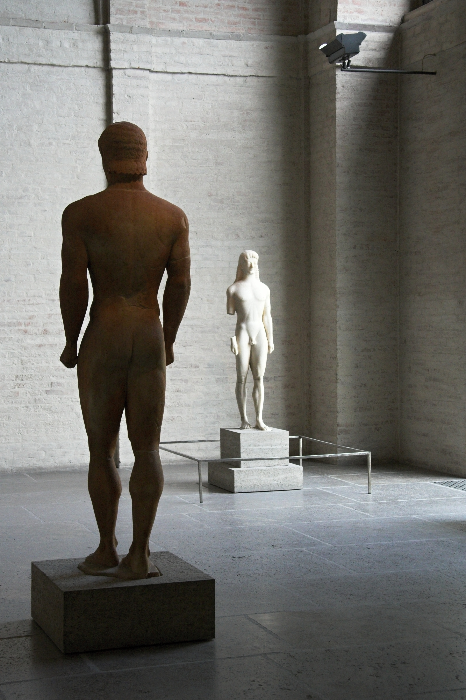

Kouros (KOO-ros)
A standing marble figure of a young man, carved in Archaic Greece between about 650 and 480 B.C.E. Plural: kouroi (KOO-roy). The female counterpart is the kore (KOR-ay).
Archaic Greece · circa 600–530 B.C.E.

The kouros is where the story of European figurative sculpture begins. Greek sculptors of the Archaic period, roughly 650 to 480 B.C.E., borrowed the pose from Egypt: the stiff frontal stance, the left foot stepped forward, and the clenched fists. Over two centuries, they slowly made it their own. Hundreds of these statues survive.
Every classical pose you will meet in this deck, and every Renaissance figure a thousand years later, descends from this starting point. Donatello’s David and Michelangelo’s David both answer to the kouros. This is Case 1 because it is the beginning.
A standing marble figure of a young man, carved in Archaic Greece between about 650 and 480 B.C.E. Plural: kouroi (KOO-roy). The female counterpart is the kore (KOR-ay).
The early period of Greek art, roughly 650 to 480 B.C.E., named for its stiff, stylized figures that still look part Egyptian. The period ends when Greek sculptors begin to carve bodies as they actually move.
A pose in which a figure faces directly forward with its weight evenly on both legs. Egyptian sculptors used it for royal portraits for three thousand years; the Greeks took it over and then, over two centuries, broke out of it.
The whole arc of classical sculpture is the slow loosening of this pose. Within this deck, Discobolus shows a body in motion, while Doryphoros introduces contrapposto. Much later, you will meet Donatello’s David in the Renaissance deck, where this relaxed, weight-shifted pose returns. The kouros is the “before” picture for everything that follows.